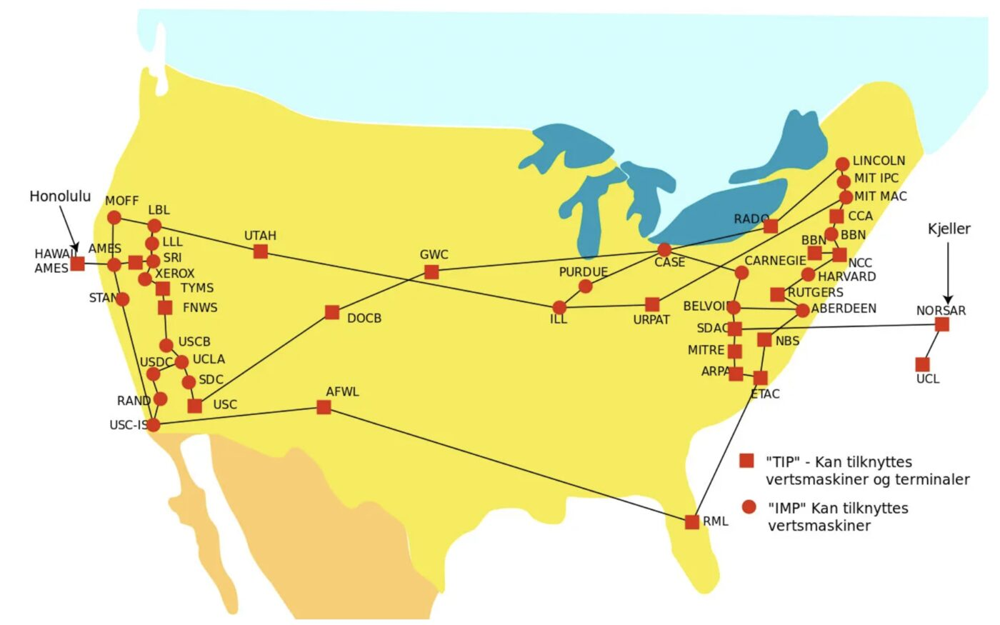
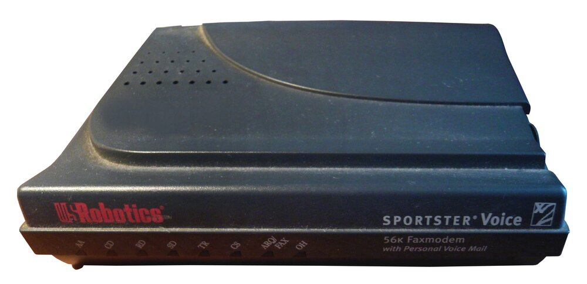
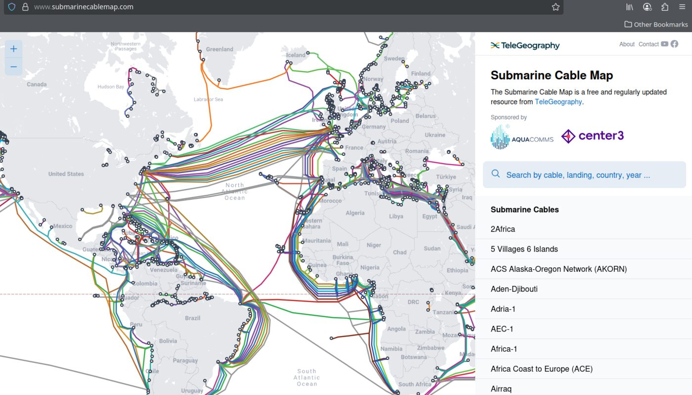
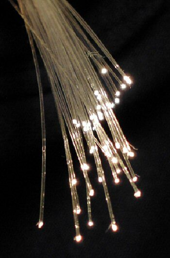
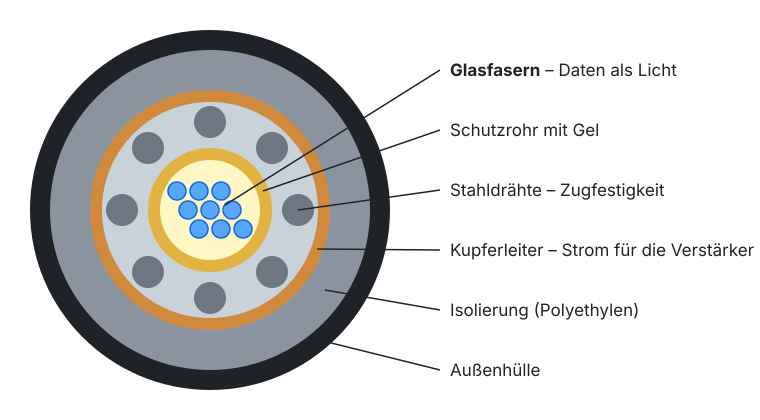
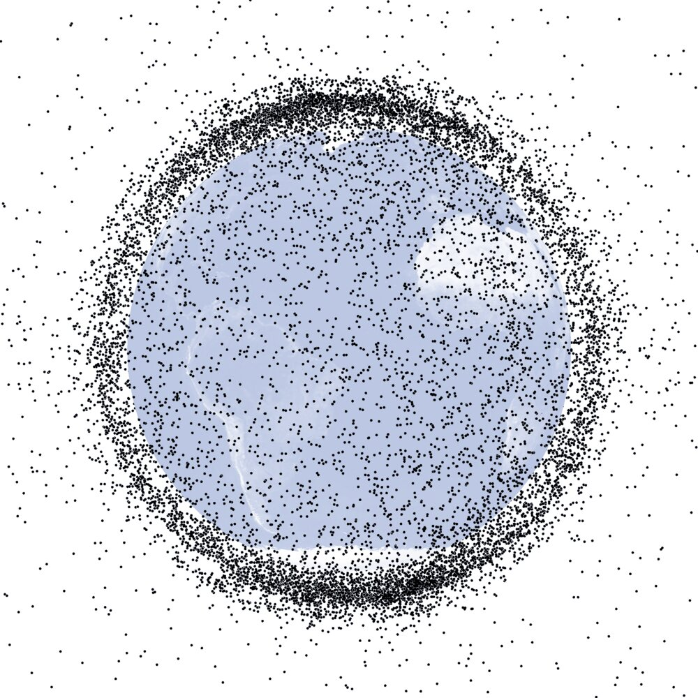

Lektion 1.1 — Teil 1: Web & HTML
Geschichte des Internets
Lernziele
- Den Aufbau des Fachs Web- and Mobile Computing (WMC) über zwei Jahre kennen
- Die Entstehung des Internets vom ARPANET bis TCP/IP erklären können
- Wissen, welche Grundbausteine des Web Tim Berners-Lee am CERN erfunden hat
- Die wichtigsten Meilensteine von HTML, CSS, JavaScript und den Browsern zeitlich einordnen
- Verstehen, auf welcher physischen Infrastruktur das moderne Internet läuft
1 — Web- and Mobile Computing (WMC)
Im Fach Web- and Mobile Computing lernst du, wie moderne Web-Anwendungen funktionieren und wie man sie selbst baut. Die Grafik unten zeigt das Grundprinzip, das uns den ganzen Kurs begleitet: Ein Mensch klickt im Browser auf einen Link, der Browser schickt einen HTTP-Request über das Internet (WWW) an einen Webserver, und dieser antwortet mit einer HTTP-Response – zum Beispiel einer HTML-Seite mit „Hello World!“.

Das Fach ist über zwei Jahre aufgebaut:
| Zeitraum | Inhalte |
|---|---|
| Erstes Jahr – Wintersemester | HTML, CSS (dieser Kurs) |
| Erstes Jahr – Sommersemester | JavaScript |
| Zweites Jahr | Single Page Application, TypeScript, React, Next.JS |
2 — Pre-Internet: ARPANET
1969 – Das ARPANET war das erste erfolgreiche Networking-Projekt. Beteiligt waren Universitäten und Forschungszentren, Regierungen und Firmen.
- Ursprung: Das ARPANET wurde vom US-Verteidigungsministerium finanziert und initiiert.
- Erste Verbindung: Die erste ARPANET-Verbindung wurde am 29. Oktober 1969 zwischen der University of California, Los Angeles (UCLA) und dem Stanford Research Institute (SRI) hergestellt.
- Protokolle: Anfänglich verwendete das ARPANET das Network Control Program (NCP). Anfang der 1980er-Jahre wechselte es zu TCP/IP, das die Grundlage für das heutige Internet legte.
- Expansion: Im Laufe der Jahre wuchs das Netzwerk und schloss verschiedene Universitäten und Forschungsinstitute in den USA ein.
- Außerbetriebnahme: Das ARPANET wurde 1990 offiziell außer Betrieb genommen.
ARPANET, September 1974

Die wichtigsten Merkmale des ARPANET auf einen Blick:
- Initiiert vom US-Verteidigungsministerium und dem MIT
- Dezentrales Netz – fällt ein Knoten aus, funktioniert der Rest weiter
- Verbindung über Telefonleitungen
- Packet Switching – Daten werden in kleine Pakete zerlegt, die unabhängig voneinander ihren Weg durchs Netz finden
- Vorläufer des heutigen Internets
3 — Vinton Cerf & Robert Kahn: TCP/IP
Vinton Cerf (geb. 1943) und Robert Kahn (geb. 1938) entwickelten TCP/IP – das bis heute grundlegende Protokoll des Internets.
Bericht zum Besuch: https://www.spengergasse.at/?p=2135
Die Schichten von TCP/IP
TCP/IP ist in Schichten (Layer) organisiert. Jede Schicht übernimmt eine klar abgegrenzte Aufgabe und nutzt dazu die Schicht darunter:
| Schicht | Beispiele |
|---|---|
| Application-Layer | HTTP, FTP, SMTP, POP, … |
| Transport-Layer | TCP, UDP, … |
| Internet-Layer | IPv4, IPv6, … |
| Link Layer | z. B. Ethernet, WLAN |
Als Web-Entwickler:innen arbeiten wir fast ausschließlich auf dem Application-Layer – mit HTTP. Alles darunter erledigen Betriebssystem und Netzwerk für uns.
4 — Sir Tim Berners-Lee, CERN 1990
Ende der 1980er-Jahre erkannte Tim Berners-Lee am CERN die Notwendigkeit, Forschungsdaten effizient zu teilen. Er schlug das Konzept eines dezentralen Informationssystems mit Hypertext vor, das später als World Wide Web bekannt wurde.
Tim Berners-Lee erfand die Grundbausteine des heutigen Web:
- HTTP-Protokoll
- HTML
- URL
Er programmierte außerdem den ersten:
- Browser
- HTTP-Server
Das Internet ist das weltweite Netzwerk aus Rechnern (ARPANET, TCP/IP). Das World Wide Web ist ein Dienst, der auf dem Internet läuft – neben anderen wie E-Mail (SMTP) oder Dateiübertragung (FTP).
5 — Modernes Internet: Zeitleiste
- 1990Tim Berners-Lee/CERN: HTML, HTTP, URL, HTTP-Server, Browser
- 1991HTML Draft
- 1995HTML 2: erster offizieller HTML-Standard
- 1994Tim Berners-Lee: World Wide Web Consortium (W3C)
- 1994Marc Andreessen (Mosaic): Netscape Navigator
- 1994Håkon Lie: CSS
- 1995Brendan Eich/Netscape: JavaScript
- 1995Microsoft: Internet Explorer (1999: 99 % Marktanteil)
- 1996Browser Wars: Internet Explorer vs. Netscape
- 1997HTML 4
- 2000Netscape: Mozilla Foundation
- 2002Mozilla: Firefox
- 2003Apple: Safari
- 2008Google: Chrome
- 2010Responsive Web Design (Ethan Marcotte, A List Apart)
- 2014HTML 5
- 2015ECMAScript 2015
- 2017PWA: Progressive Web Apps
- 2023ECMAScript 2023
So kam man in den 1990ern ins Netz

6 — Modernes Internet: die Infrastruktur
Das heutige Internet läuft nicht „in der Cloud“, sondern zum größten Teil über Glasfaser-Unterseekabel, die die Kontinente verbinden. Ergänzt wird das Netz durch Satelliten.




Projektschritt
Das Kursprojekt: eine Demoseite zum Webdesign-Kurs
Im Kurs bauen wir Schritt für Schritt eine einseitige Demoseite, die selbst die Kursinhalte vorstellt: HTML, CSS, Werkzeuge, Lernprojekt und Kontakt. Jede Lektion fügt ein Stück hinzu – vom reinen HTML über das eigene Stylesheet bis zum responsiven Layout mit Flexbox, Grid, Bootstrap und Tailwind.
Lege heute die Ordnerstruktur an:
demoseite/
├── index.html ← die Seite (ab Lektion 1.3)
├── css/
│ └── style.css ← unser Stylesheet (ab Lektion 2.1)
└── img/ ← BilderUnter beispiele/ findest du zum Vergleichen den fertigen HTML-Stand am Ende von Teil 1 und ab Teil 2 den Stand nach jeder Lektion.
Häufige Fehler
„Tim Berners-Lee hat das Internet erfunden.“ – Das Internet (ARPANET, TCP/IP) gab es schon vorher.
Berners-Lee erfand das World Wide Web (HTML, HTTP, URL), das auf dem Internet aufsetzt.
TCP/IP ist eine ganze Protokollfamilie mit mehreren Schichten.
Die Schichten unterscheiden: Application (HTTP), Transport (TCP/UDP), Internet (IP), Link.
Ordner wie Meine Demoseite oder Dateien wie Über uns.html führen später zu kaputten URLs.
Nur Kleinbuchstaben, Ziffern und Bindestriche verwenden: demoseite, ueber-uns.html.
Aufgaben
Recherchiere drei weitere Meilensteine der Web-Geschichte nach 2017 (z. B. neue CSS-Features, Browser-Releases) und ordne sie zeitlich ein.
Öffne submarinecablemap.com. Welche Kabel landen in Europa am nächsten zu Österreich? Wie lang ist das längste Kabel, das du findest?
Lege die Ordnerstruktur der Demoseite aus dem Projektschritt an und öffne den Ordner demoseite in Visual Studio Code.
Recherchiere, wie der erste Browser von Tim Berners-Lee hieß und auf welchem Computer er lief. Was konnte er, was heutige Browser nicht mehr können?